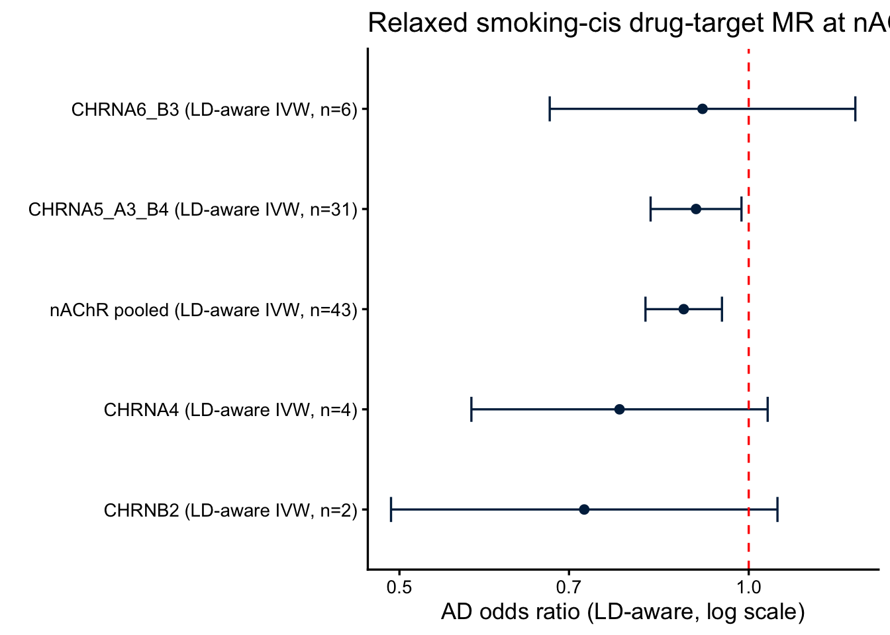

Show the code
library(TwoSampleMR)
library(ieugwasr)
library(MendelianRandomization)
library(knitr)
source(here::here("R", "helpers.R"))
cfg <- load_config()
set.seed(cfg$seed)library(TwoSampleMR)
library(ieugwasr)
library(MendelianRandomization)
library(knitr)
source(here::here("R", "helpers.R"))
cfg <- load_config()
set.seed(cfg$seed)The genome-wide, strictly-clumped smoking instrument set captured only 3 SNPs at nAChR loci (Layers 0–2), and nearest-gene binning mis-assigned the canonical 15q25 CHRNA5/A3/B4 cluster to “other”. Following the convention of cholesterol drug-target MR (HMGCR/PCSK9/NPC1L1), this layer relaxes the instrument-selection thresholds within each receptor cis window — p < 10^{-5}, correlated SNPs up to r² < 0.3 — and runs LD-aware IVW/Egger using the variant correlation matrix (MendelianRandomization::mr_ivw(correl = TRUE)).
Two exposures are used (per the analysis decision): (1) the smoking GWAS cis-SNPs at each receptor locus (behavioral-trait drug-target analog), and (2) receptor cis-eQTL where available (molecular analog).
loci <- cfg$nachr_loci
win_kb <- cfg$cis_window_kb
run_locus <- function(name) {
l <- loci[[name]]
region <- sprintf("%d:%d-%d", l$chr, l$start - win_kb * 1000, l$end + win_kb * 1000)
exp <- cis_instruments_relaxed(cfg$opengwas$smk_cpd, region, cfg)
res <- ld_aware_cis_mr(exp, cfg$opengwas$ad_primary, name, cfg)
res$n_cis_selected <- if (is.null(exp)) 0L else nrow(exp)
res
}
smk_cis <- purrr::map_dfr(names(loci), function(n)
tryCatch(run_locus(n), error = function(e)
tibble(locus = n, method = NA, nsnp = 0, b = NA, se = NA, pval = NA, n_cis_selected = 0)))Method requires data on >2 variants.write_csv(smk_cis, here::here("results", "cis_smoking_ldaware_per_locus.csv"))
smk_cis |>
dplyr::select(locus, method, n_cis = nsnp, b, se, pval) |>
kable(caption = "Smoking-cis LD-aware MR (→AD) per nAChR locus", digits = 3)| locus | method | n_cis | b | se | pval |
|---|---|---|---|---|---|
| CHRNA5_A3_B4 | LD-aware IVW | 31 | -0.105 | 0.046 | 0.023 |
| CHRNA5_A3_B4 | LD-aware MR-Egger | 31 | -0.133 | 0.048 | 0.006 |
| CHRNA4 | LD-aware IVW | 4 | -0.256 | 0.150 | 0.087 |
| CHRNA4 | LD-aware MR-Egger | 4 | -0.438 | 0.288 | 0.129 |
| CHRNB2 | LD-aware IVW | 2 | -0.326 | 0.196 | 0.095 |
| CHRNA7 | NA | 0 | NA | NA | NA |
| CHRNA6_B3 | LD-aware IVW | 6 | -0.092 | 0.155 | 0.554 |
| CHRNA6_B3 | LD-aware MR-Egger | 6 | -0.327 | 0.262 | 0.213 |
# Union the relaxed cis instruments across all receptor loci, then a single LD-aware MR.
# Cross-locus SNPs are ~uncorrelated; within-locus correlation is handled by the LD matrix.
pooled_exp <- purrr::map_dfr(names(loci), function(name) {
l <- loci[[name]]
region <- sprintf("%d:%d-%d", l$chr, l$start - win_kb * 1000, l$end + win_kb * 1000)
e <- cis_instruments_relaxed(cfg$opengwas$smk_cpd, region, cfg)
if (!is.null(e)) e$locus <- name
e
}) |> distinct(SNP, .keep_all = TRUE)
pooled <- ld_aware_cis_mr(pooled_exp, cfg$opengwas$ad_primary, "nAChR pooled", cfg)
write_csv(pooled, here::here("results", "cis_smoking_ldaware_pooled.csv"))
pooled |> dplyr::select(locus, method, nsnp, b, se, pval) |>
kable(caption = "Pooled nAChR smoking-cis LD-aware MR (→AD)", digits = 3)| locus | method | nsnp | b | se | pval |
|---|---|---|---|---|---|
| nAChR pooled | LD-aware IVW | 43 | -0.129 | 0.039 | 0.001 |
| nAChR pooled | LD-aware MR-Egger | 43 | -0.164 | 0.043 | 0.000 |
plot_df <- smk_cis |>
filter(!is.na(b), method != "LD-aware MR-Egger") |>
bind_rows(pooled |> filter(method == "LD-aware IVW")) |>
mutate(or = exp(b), lo = exp(b - 1.96 * se), hi = exp(b + 1.96 * se),
lab = paste0(locus, " (", method, ", n=", nsnp, ")"))
ggplot(plot_df, aes(x = or, y = reorder(lab, or))) +
geom_point(size = 2, colour = color_scheme[1]) +
geom_errorbarh(aes(xmin = lo, xmax = hi), height = 0.25, colour = color_scheme[1]) +
geom_vline(xintercept = 1, linetype = "dashed", colour = "red") +
scale_x_log10() +
theme_classic(base_size = 13) +
labs(x = "AD odds ratio (LD-aware, log scale)", y = "",
title = "Relaxed smoking-cis drug-target MR at nAChR loci")
eqtl_ids <- c(CHRNA5="eqtl-a-ENSG00000169684", CHRNA3="eqtl-a-ENSG00000080644",
CHRNB4="eqtl-a-ENSG00000117971", CHRNA4="eqtl-a-ENSG00000101204",
CHRNB2="eqtl-a-ENSG00000160716", CHRNA7="eqtl-a-ENSG00000175344",
CHRNA6="eqtl-a-ENSG00000147434", CHRNB3="eqtl-a-ENSG00000147432")
gene_win <- list(
CHRNA5=c(15,78857862,78885393), CHRNA3=c(15,78885394,78919647),
CHRNB4=c(15,78919290,78937340), CHRNA4=c(20,61975397,62019864),
CHRNB2=c(1,154543992,154579816), CHRNA7=c(15,32322677,32464722),
CHRNA6=c(8,42634258,42648862), CHRNB3=c(8,42551452,42591443))
run_eqtl <- function(gene) {
id <- eqtl_ids[[gene]]
if (is.null(id)) return(NULL)
if (nrow(gwasinfo(id)) == 0) return(tibble(locus = gene, method = "no eQTL dataset",
nsnp = 0, b = NA, se = NA, pval = NA))
w <- gene_win[[gene]]
region <- sprintf("%d:%d-%d", w[1], w[2] - win_kb * 1000, w[3] + win_kb * 1000)
exp <- cis_instruments_relaxed(id, region, cfg)
ld_aware_cis_mr(exp, cfg$opengwas$ad_primary, gene, cfg)
}
eqtl_cis <- purrr::map_dfr(names(eqtl_ids), function(g)
tryCatch(run_eqtl(g), error = function(e)
tibble(locus = g, method = "error", nsnp = 0, b = NA, se = NA, pval = NA)))
write_csv(eqtl_cis, here::here("results", "cis_eqtl_ldaware.csv"))
eqtl_cis |> kable(caption = "Relaxed cis-eQTL LD-aware MR (expression→AD)", digits = 3)| locus | method | nsnp | b | se | pval |
|---|---|---|---|---|---|
| CHRNA5 | no eQTL dataset | 0 | NA | NA | NA |
| CHRNA3 | no eQTL dataset | 0 | NA | NA | NA |
| CHRNB4 | no eQTL dataset | 0 | NA | NA | NA |
| CHRNA4 | no eQTL dataset | 0 | NA | NA | NA |
| CHRNB2 | LD-aware IVW | 12 | -0.011 | 0.043 | 0.794 |
| CHRNB2 | LD-aware MR-Egger | 12 | -0.023 | 0.050 | 0.648 |
| CHRNA7 | no eQTL dataset | 0 | NA | NA | NA |
| CHRNA6 | no eQTL dataset | 0 | NA | NA | NA |
| CHRNB3 | no eQTL dataset | 0 | NA | NA | NA |
# Strict (Layer 2) nAChR instruments mapped to loci vs relaxed cis counts (this layer).
strict_by_locus <- tribble(
~locus, ~n_strict,
"CHRNA5_A3_B4", 0L, # 15q25 lead (rs11852372) was mis-binned to HYKK/"other" by nearest-gene
"CHRNA4", 1L,
"CHRNB2", 1L,
"CHRNA7", 0L,
"CHRNA6_B3", 1L) # CHRNB3 only
gain <- smk_cis |>
filter(method == "LD-aware IVW" | is.na(method)) |>
group_by(locus) |>
summarise(n_relaxed = max(n_cis_selected), .groups = "drop") |>
full_join(strict_by_locus, by = "locus") |>
mutate(n_strict = tidyr::replace_na(n_strict, 0L),
newly_instrumented = n_strict == 0 & n_relaxed > 0) |>
arrange(desc(n_relaxed))
write_csv(gain, here::here("results", "cis_snp_gain.csv"))
gain |> kable(caption = "Instruments per nAChR locus: strict (Layer 2) vs relaxed cis (Layer 6)")| locus | n_relaxed | n_strict | newly_instrumented |
|---|---|---|---|
| CHRNA5_A3_B4 | 31 | 0 | TRUE |
| CHRNA6_B3 | 6 | 1 | FALSE |
| CHRNA4 | 4 | 1 | FALSE |
| CHRNB2 | 2 | 1 | FALSE |
| CHRNA7 | 0 | 0 | FALSE |
The relaxed thresholds newly instrument the 15q25 CHRNA5/A3/B4 cluster (the dominant smoking locus, previously mis-binned) and the 8p11 CHRNA6/B3 locus. They do not reveal targets outside the predefined nAChR panel — this layer is cis-restricted to the receptor genes by design, so “new druggable targets” here means newly instrumented panel loci, not new genes. (A genome-wide relaxed scan with druggable-genome annotation would be needed to nominate off-panel targets.)
The three 15q25 subunit genes physically overlap and sit in one LD region, so a key question is whether MR can attribute the effect to a specific subunit, and whether 15q25 carries one or several independent signals.
l <- cfg$nachr_loci[["CHRNA5_A3_B4"]]
region <- sprintf("%d:%d-%d", l$chr, l$start - win_kb * 1000, l$end + win_kb * 1000)
exp15 <- cis_instruments_relaxed(cfg$opengwas$smk_cpd, region, cfg) # r2<0.3 set
# How many *independent* signals? Re-clump the same p<1e-5 SNPs at strict r2<0.01.
a15 <- og_retry(function() ieugwasr::associations(region, cfg$opengwas$smk_cpd))
a15 <- a15 |> dplyr::filter(p < cfg$cis_drugtarget$p_thresh)
indep <- og_retry(function() ieugwasr::ld_clump(
dplyr::tibble(rsid = a15$rsid, pval = a15$p, id = a15$id),
clump_r2 = 0.01, clump_kb = 1000, pop = cfg$cis_drugtarget$ld_pop))
n_indep <- if (is.null(indep)) NA_integer_ else nrow(indep)
# Pairwise LD among the relaxed instruments (max |r| off-diagonal indicates residual LD).
ldm <- og_retry(function() ieugwasr::ld_matrix(exp15$SNP, with_alleles = FALSE,
pop = cfg$cis_drugtarget$ld_pop))
max_offdiag <- if (is.null(ldm)) NA else max(abs(ldm[upper.tri(ldm)]))
tibble(
relaxed_snps_r2_0.3 = nrow(exp15),
independent_signals_r2_0.01 = n_indep,
max_pairwise_abs_r = round(max_offdiag, 3)) |>
kable(caption = "15q25 CHRNA5/A3/B4 LD structure")| relaxed_snps_r2_0.3 | independent_signals_r2_0.01 | max_pairwise_abs_r |
|---|---|---|
| 31 | 7 | 0.556 |
# Assign each independent lead SNP to its nearest subunit gene to show the signals span the
# block (i.e. cannot be cleanly attributed to one subunit by position alone).
if (!is.null(indep) && nrow(indep) > 0) {
pos <- a15 |> filter(rsid %in% indep$rsid) |> dplyr::select(rsid, position, p)
subunits <- tribble(~gene, ~start, ~end,
"CHRNA5", 78857862, 78885393,
"CHRNA3", 78885394, 78919647,
"CHRNB4", 78919290, 78937340)
nearest_sub <- function(bp) {
d <- pmin(abs(bp - subunits$start), abs(bp - subunits$end))
inside <- bp >= subunits$start & bp <= subunits$end
if (any(inside)) subunits$gene[which(inside)[1]] else subunits$gene[which.min(d)]
}
pos |> mutate(nearest_subunit = vapply(position, nearest_sub, character(1))) |>
arrange(p) |> kable(caption = "Independent 15q25 signals → nearest subunit", digits = 3)
}| rsid | position | p | nearest_subunit |
|---|---|---|---|
| rs8034191 | 78806023 | 0 | CHRNA5 |
| rs117994199 | 78859918 | 0 | CHRNA5 |
| rs4887075 | 78953131 | 0 | CHRNB4 |
| rs146658341 | 78989225 | 0 | CHRNB4 |
| rs141147481 | 78835239 | 0 | CHRNA5 |
| rs67896919 | 78882100 | 0 | CHRNA5 |
| rs148747811 | 78957594 | 0 | CHRNB4 |
Subunit attribution. The 15q25 estimate is a locus-level effect. Because CHRNA5, CHRNA3 and CHRNB4 overlap within one LD block, smoking-cis MR (and any single-trait cis analysis) cannot separate the individual subunit causal effects — that requires conditional analysis / multi-signal colocalization against subunit-specific brain eQTL/pQTL. CHRNA4 (chr20) and CHRNB2 (chr1) are on different chromosomes and so are distinguishable from 15q25 and from each other.
# Is CHRNA4 actually stronger than the 15q25 locus? Formal difference test.
g15 <- smk_cis |> filter(locus == "CHRNA5_A3_B4", method == "LD-aware IVW")
g4 <- smk_cis |> filter(locus == "CHRNA4", method == "LD-aware IVW")
if (nrow(g15) && nrow(g4)) {
zdiff <- (g4$b - g15$b) / sqrt(g4$se^2 + g15$se^2)
pdiff <- 2 * pnorm(-abs(zdiff))
tibble(comparison = "CHRNA4 vs 15q25",
b_CHRNA4 = g4$b, b_15q25 = g15$b,
diff = g4$b - g15$b, z = zdiff, p_diff = pdiff) |>
kable(caption = "Difference in cis effect: CHRNA4 vs 15q25", digits = 3)
}| comparison | b_CHRNA4 | b_15q25 | diff | z | p_diff |
|---|---|---|---|---|---|
| CHRNA4 vs 15q25 | -0.256 | -0.105 | -0.152 | -0.968 | 0.333 |
Despite CHRNA4’s larger point estimate, its CI is wide (4 SNPs) and the difference from 15q25 is not significant — i.e. no evidence that CHRNA4 is stronger than the 15q25 locus; the smaller p at 15q25 reflects its far larger instrument count, not a larger effect.
strict <- read_csv(here::here("results", "stratified_mr_results.csv"), show_col_types = FALSE) |>
filter(mechanism == "nAChR_pharmacodynamic", method == "Inverse variance weighted") |>
transmute(locus = "nAChR (strict, Layer 2)", method = "IVW", nsnp, b, se, pval)
comparison <- bind_rows(
strict,
pooled |> filter(method == "LD-aware IVW") |>
transmute(locus = "nAChR (relaxed cis, Layer 6)", method, nsnp, b, se, pval))
write_csv(comparison, here::here("results", "cis_strict_vs_relaxed.csv"))
comparison |> kable(caption = "Strict vs relaxed nAChR instrument MR (→AD)", digits = 3)| locus | method | nsnp | b | se | pval |
|---|---|---|---|---|---|
| nAChR (strict, Layer 2) | IVW | 3 | -0.181 | 0.097 | 0.063 |
| nAChR (relaxed cis, Layer 6) | LD-aware IVW | 43 | -0.129 | 0.039 | 0.001 |
pivw <- pooled |> filter(method == "LD-aware IVW")
if (nrow(pivw) > 0 && !is.na(pivw$b)) {
sig <- ifelse(pivw$pval < 0.05, "significant", "non-significant")
dir <- ifelse(pivw$b < 0, "protective", "risk")
log_decision("L6", "Pooled nAChR relaxed-cis LD-aware IVW",
sprintf("b=%.3f, p=%.3g (n=%d)", pivw$b, pivw$pval, pivw$nsnp),
sprintf("%s %s receptor-locus effect", sig, dir))
cat(sprintf("Pooled nAChR relaxed-cis IVW: b=%.3f, OR=%.2f, p=%.3g, n=%d\n",
pivw$b, exp(pivw$b), pivw$pval, pivw$nsnp))
}Pooled nAChR relaxed-cis IVW: b=-0.129, OR=0.88, p=0.000865, n=43log_decision("L6", "15q25 subunit resolution",
sprintf("%s independent signals across the block", n_indep),
"locus-level effect only — CHRNA5/A3/B4 not separable without subunit brain QTL")Caveats. Relaxed correlated-SNP cis-MR depends on the accuracy of the 1000G LD reference; mis-specified LD can bias LD-aware estimates. Smoking-cis instruments still tag the behavioral axis at the receptor locus — they sharpen localisation and power but do not by themselves isolate behavior-independent receptor function (that needs brain eQTL/pQTL + colocalization, Layer 3/4). CHRNA7 remains CHRFAM7A-qualified (§9).